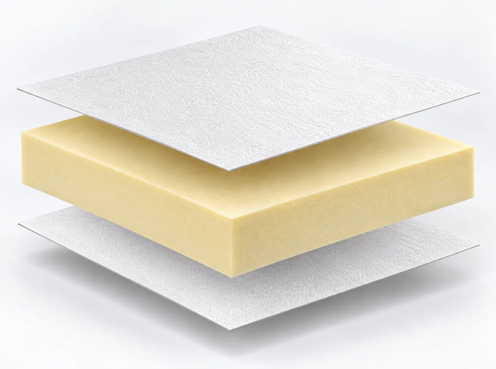
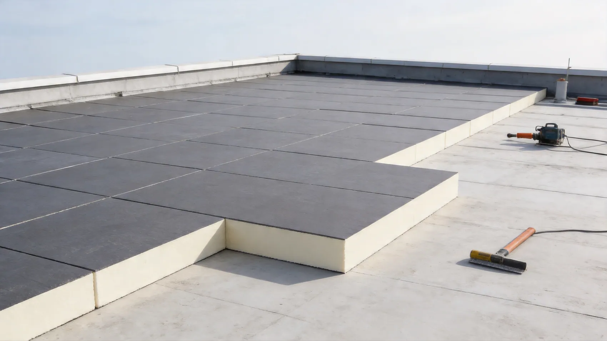
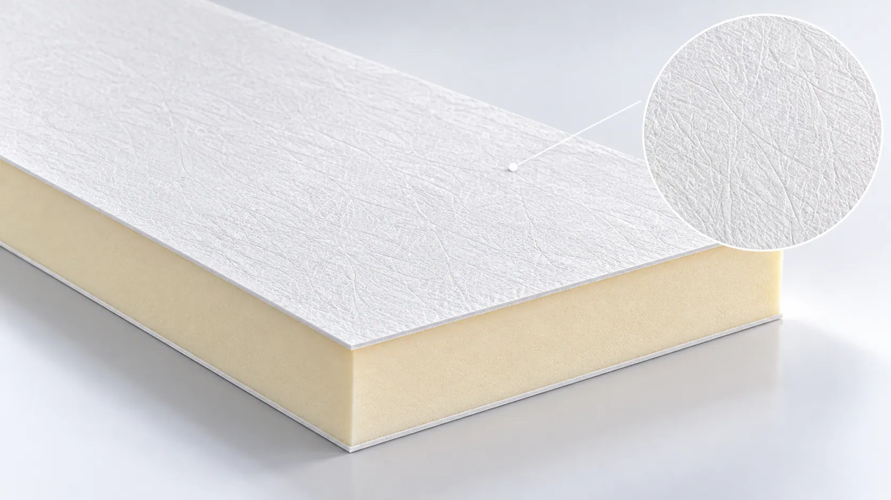
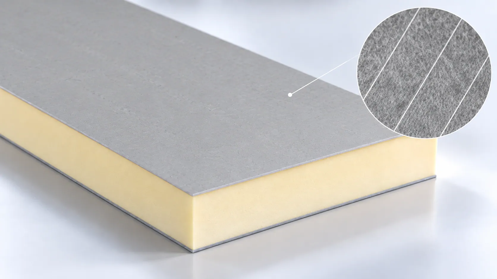
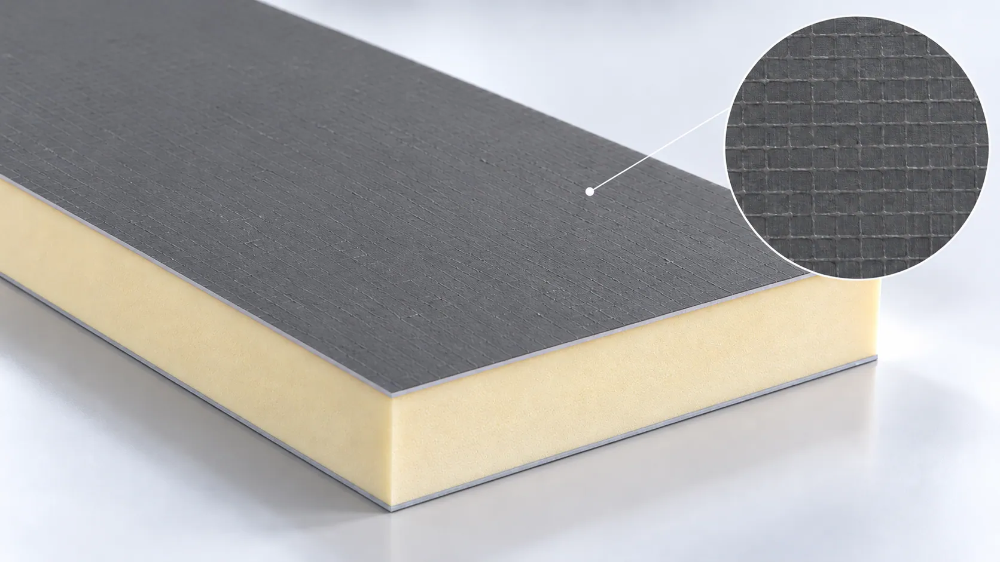
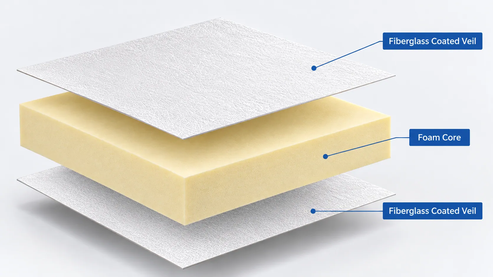
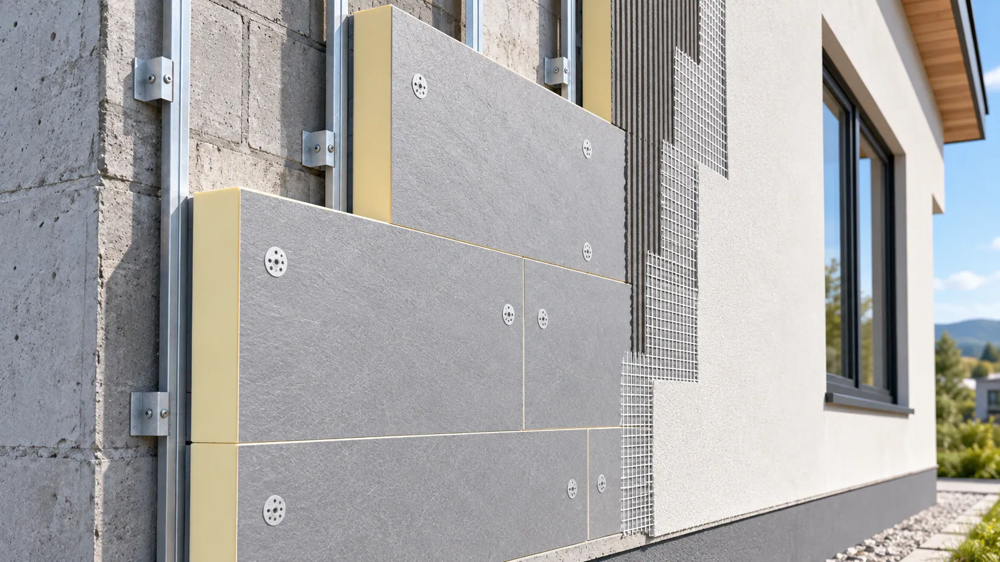
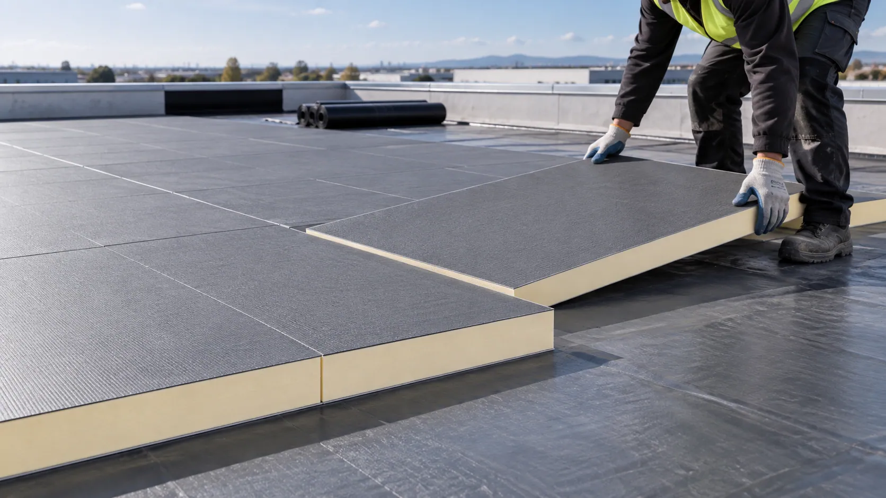
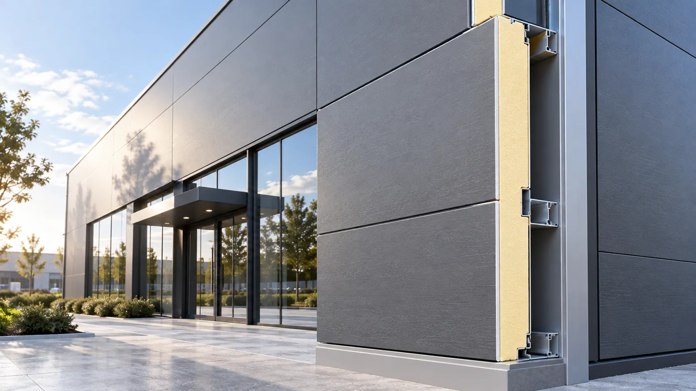

01 — Foam Adhesion
Incompatible coating properties or surface characteristics may result in insufficient bonding between the fiberglass facing and the PIR/PUR foam core.
01 — HERO BANNER
Eyebrow: FIBERGLASS FACING SOLUTIONS FOR PIR/PUR
A Stable Facing. A Stronger Foundation for Insulation Performance.
Build reliable PIR/PUR insulation boards with the right facing material.
GRECHO Fiberglass Coated Veil combines a dimensionally stable fiberglass substrate with engineered surface coatings to support foam adhesion, consistent processing, and reliable facing performance in PIR/PUR insulation board manufacturing.
Available in three facing structures to match different production and reinforcement requirements.
Key Highlights

02 — PRODUCTION CHALLENGES
Eyebrow: PERFORMANCE STARTS WITH THE FACING
The facing material does more than cover the foam core.
During PIR/PUR insulation board manufacturing, the facing must interact with the expanding foam, maintain dimensional consistency, and withstand continuous production conditions.
Unsuitable facing characteristics can contribute to bonding defects, surface deformation, or processing interruptions.
Four essential considerations influence the performance of fiberglass-faced PIR/PUR insulation boards.
Incompatible coating properties or surface characteristics may result in insufficient bonding between the fiberglass facing and the PIR/PUR foam core.
Facing deformation or inconsistent tension may lead to wrinkles, surface distortion, or difficulties maintaining a flat panel appearance during production.
Standard facing structures may not provide the directional or multidirectional reinforcement required by certain insulation panel designs.
Inconsistent thickness, coating distribution, or material strength may affect unwinding, foam application, and continuous lamination performance.

Selecting the appropriate facing structure helps manufacturers address material compatibility and production stability before they affect finished-panel quality.
03 — GRECHO SOLUTIONS
Eyebrow: ENGINEERED FOR CONSISTENCY
Reliable PIR/PUR panel production begins with the right facing structure.
GRECHO Fiberglass Coated Veil offers a balanced combination of foam compatibility, dimensional stability, processing reliability, and optional mechanical reinforcement.
Engineered facing and coating characteristics support evaluation with different PIR/PUR formulations and foam bonding requirements.
A dimensionally stable fiberglass substrate helps maintain consistent material geometry during unwinding, foaming, and lamination.
Standard, fiberglass yarn-reinforced, and fiberglass mesh-reinforced structures allow manufacturers to choose the facing configuration that matches their mechanical and processing requirements.
Consistent material characteristics support stable handling and integration with continuous PIR/PUR insulation board production lines.
04 — FACING STRUCTURE OPTIONS
Eyebrow: THREE STRUCTURES. MORE POSSIBILITIES.
Different PIR/PUR panel designs require different levels and directions of reinforcement.
GRECHO offers three fiberglass coated veil structures to help manufacturers balance surface consistency, mechanical support, and production requirements.

Simple Structure. Consistent Performance.
Features a uniform coated fiberglass veil surface without additional yarn or mesh reinforcement.
Provides a lightweight, dimensionally stable facing structure suitable for conventional PIR/PUR insulation board manufacturing.
Best For: Standard PIR/PUR insulation boards requiring consistent surface quality and reliable processing.
Source-supplied illustration. It does not establish test results or product-grade performance.

Directional Reinforcement. Enhanced Stability.
Incorporates additional fiberglass reinforcing yarns into the veil structure to provide targeted tensile support along the reinforcement direction.
Designed for applications requiring improved directional strength and greater stability during handling and processing.
Best For: PIR/PUR insulation boards requiring additional reinforcement in a selected direction.
Source-supplied illustration. It does not establish test results or product-grade performance.

Multidirectional Reinforcement. Greater Structural Support.
Integrates a fiberglass mesh reinforcement structure with the coated veil to provide additional tensile support in both longitudinal and transverse directions.
Suitable for insulation board designs requiring reinforced facing characteristics and improved handling stability.
Best For: PIR/PUR insulation panels requiring reinforcement in multiple directions.
Source-supplied illustration. It does not establish test results or product-grade performance.
From conventional coated veil to reinforced facing solutions, GRECHO helps manufacturers select the appropriate structure according to their foam formulation, production conditions, and finished-panel requirements.
05 — KEY ADVANTAGES
Eyebrow: MATERIAL PERFORMANCE
Four facing characteristics that matter in insulation board manufacturing.
Engineered facing properties support suitable interaction with PIR/PUR foam formulations, helping manufacturers develop reliable foam-to-facing adhesion.
The fiberglass substrate provides a stable material structure that supports consistent processing and surface flatness.
Additional fiberglass yarn or mesh structures provide reinforcement options for applications requiring increased directional or multidirectional tensile support.
Consistent coating and substrate characteristics support stable unwinding, foaming, lamination, and cutting during continuous panel manufacturing.
More Stability in the Facing. More Confidence in the Finished Panel.
06 — PRODUCT STRUCTURE
Eyebrow: HOW IT WORKS
The facing connects the foam core with the required surface and reinforcement characteristics.
GRECHO Fiberglass Coated Veil is designed for integration with rigid PIR/PUR foam insulation cores.
Its coated fiberglass structure provides a stable facing surface, while optional fiberglass yarn or mesh reinforcement offers additional mechanical support.

A lightweight fiberglass veil combined with an engineered surface coating, designed to provide consistent surface characteristics and reliable processing.
Depending on the selected product grade, additional fiberglass yarns or mesh may be integrated into the facing structure.
A rigid polyisocyanurate or polyurethane foam core that provides the primary thermal insulation function of the finished panel.
The facing and foam core should be evaluated as a complete insulation panel system to confirm bonding strength, dimensional stability, thermal performance, and manufacturing compatibility.
07 — PRODUCT SELECTION
Eyebrow: FIND YOUR FACING SOLUTION
Different insulation board production lines and applications require different facing characteristics.
GRECHO supports material selection according to foam formulation, production line conditions, panel dimensions, and mechanical requirements.
For Conventional PIR/PUR Board Production
A practical facing solution for standard insulation boards requiring uniform surface coverage, stable processing, and suitable foam compatibility.
Best For: Conventional rigid PIR/PUR insulation boards.
For Directional Strength Requirements
Provides additional reinforcing yarns to support facing stability and tensile performance along the selected reinforcement direction.
Best For: PIR/PUR panels requiring enhanced directional reinforcement during processing or handling.
For Multidirectional Reinforcement
Features a fiberglass mesh structure that provides additional reinforcement in both principal directions.
Best For: PIR/PUR insulation boards requiring more comprehensive facing reinforcement.
08 — TECHNICAL SPECIFICATIONS
Eyebrow: TECHNICAL INFORMATION
GRECHO supports the evaluation of different coated veil and reinforced facing structures according to PIR/PUR insulation board manufacturing requirements.
| Parameter | Specification |
|---|---|
| Product | Fiberglass Coated Veil for PIR/PUR |
| Base Material | Fiberglass Veil |
| Surface Treatment | Engineered Coating |
| Color | Grade-Dependent / Customizable |
| Surface Finish | Uniform Coated Surface |
| Structure Options | Standard / Yarn-Reinforced / Mesh-Reinforced |
| Reinforcement Material | Fiberglass Yarn / Fiberglass Mesh |
| Reinforcement Direction | None / Directional / Bidirectional |
| Basis Weight | Grade-Dependent / Customizable |
| Roll Width | Customizable |
| Tensile Strength | Grade-Dependent |
| Dimensional Stability | Fiberglass-Based Structure |
| Foam Compatibility | PIR / PUR |
| Supply Form | Rolls |
| Customization | Width, Weight, Coating, Reinforcement & Surface Properties |
Technical specifications, tensile properties, reinforcement configurations, tolerances, and foam bonding performance vary by product grade. Contact GRECHO for the appropriate technical datasheet and available customization options.
09 — APPLICATIONS
Eyebrow: APPLICATIONS
Fiberglass facing solutions for different insulation board constructions and manufacturing needs.

Stable Facing for Thermal Insulation Systems.
Fiberglass coated veil provides a facing solution for rigid PIR/PUR insulation boards used in suitable wall insulation assemblies.
Its stable material structure supports reliable panel manufacturing, while reinforcement options allow manufacturers to evaluate additional mechanical support requirements.
Key Requirements: Foam Adhesion · Dimensional Stability · Surface Consistency
Application context only. Material grade and performance are not established by this image.

Reliable Facing for Roofing Board Production.
PIR/PUR roofing insulation boards require facing materials compatible with continuous foam production and the intended roofing assembly.
GRECHO fiberglass coated veil offers stable surface characteristics, with optional reinforcement for applications requiring additional facing strength.
Key Requirements: Processing Stability · Foam Compatibility · Mechanical Reinforcement
Application context only. Material grade and performance are not established by this image.

Flexible Facing Structures for Different Panel Systems.
Composite building panels may incorporate PIR/PUR cores with different facing materials to meet specific construction requirements.
GRECHO supports facing structure selection through standard, yarn-reinforced, and mesh-reinforced coated veil options.
Key Requirements: Facing Stability · Foam Bonding · Structural Compatibility
Application context only. Material grade and performance are not established by this image.
10 — SAMPLE & PRODUCTION VALIDATION
Eyebrow: FROM SAMPLE TO PRODUCTION
The right facing structure should be evaluated with your foam formulation and production line.
Different PIR/PUR manufacturers use different foam formulations, line speeds, lamination processes, and panel dimensions.
GRECHO supports facing selection through structured material evaluation.
Share your PIR/PUR foam formulation, board dimensions, production conditions, reinforcement requirements, and technical targets.
Evaluate standard, yarn-reinforced, and mesh-reinforced facing structures, including surface coating and relevant mechanical properties.
Test the selected facing with your foam application, expansion, bonding, lamination, and cutting processes.
Finalize the appropriate facing structure, roll dimensions, coating characteristics, reinforcement configuration, and supply requirements.
Our goal is to help manufacturers select the right facing material for their production process and intended insulation board application.
11 — FREQUENTLY ASKED QUESTIONS
Eyebrow: FAQ
It is a coated fiberglass veil designed for use as a facing material in rigid PIR/PUR foam insulation board manufacturing.
Different facing structures can be selected according to production and reinforcement requirements.
Standard coated veil provides a uniform fiberglass-based facing without additional reinforcement.
Yarn-reinforced coated veil incorporates additional fiberglass yarns for directional tensile support.
Mesh-reinforced coated veil uses a fiberglass mesh structure to provide reinforcement in both longitudinal and transverse directions.
Additional fiberglass yarn or mesh reinforcement can improve selected tensile properties and handling stability.
The actual improvement depends on reinforcement design, material weight, bonding structure, and product grade.
Fiberglass coated veil can be evaluated for compatibility with both PIR and PUR insulation systems.
Final suitability depends on foam formulation, processing conditions, and bonding performance.
Reinforced facing may contribute to selected mechanical characteristics of the finished panel.
However, overall panel strength also depends on foam density, core structure, facing adhesion, panel dimensions, and other construction factors.
Customization options may include yarn spacing, mesh configuration, basis weight, roll width, and coating properties, subject to product grade and manufacturing feasibility.
Yes. GRECHO can discuss standard, yarn-reinforced, and mesh-reinforced facing samples according to your production and technical requirements.
12 — FINAL CTA
Eyebrow: LET'S FIND YOUR SOLUTION
Three Facing Structures. More Ways to Build Better Insulation Boards.
Whether your priority is consistent surface quality, reliable foam bonding, directional reinforcement, or multidirectional mechanical support, GRECHO can help you evaluate a suitable fiberglass facing solution.
Tell us about your PIR/PUR formulation, production process, panel dimensions, and reinforcement requirements.
GRECHO — Fiberglass Facing Solutions for Better Building Materials.